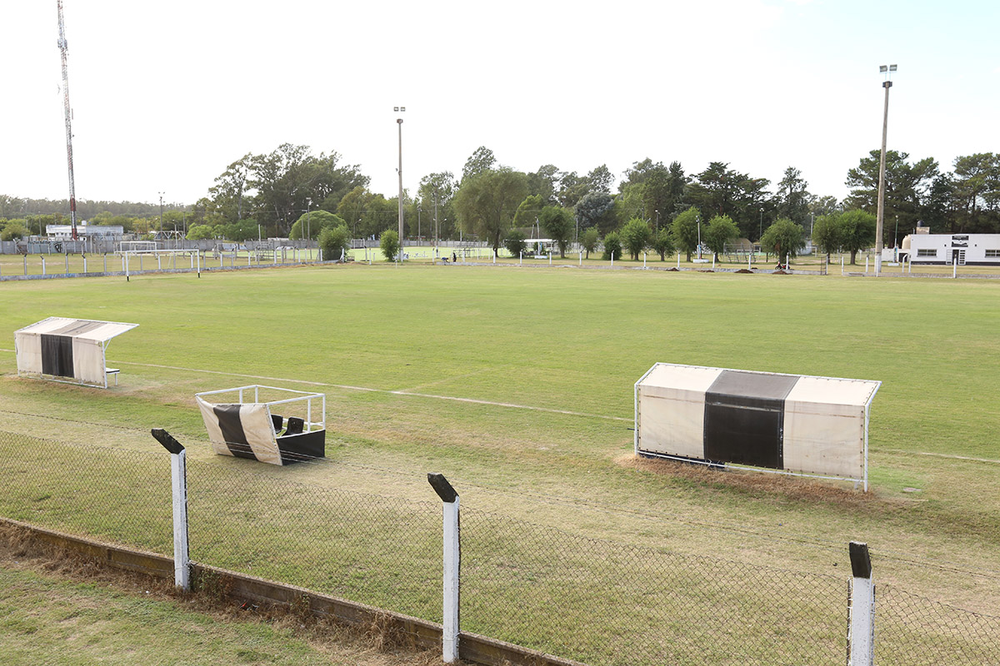
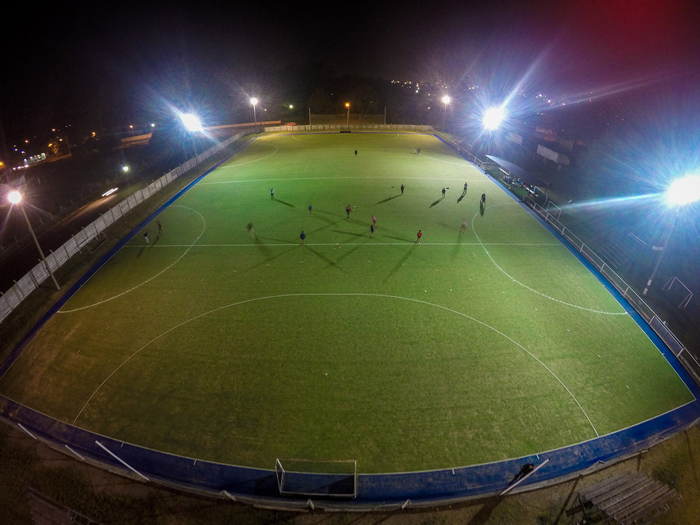

Pico Footbal ClubGRAL. PICO, LA PAMPAAv. San Martín 147Telefono: 02302 - 427517Fecha de fundacion: 1 de Abril 1919 |
 |
Historia
Tres meses antes de la fundación de General Pico, el 11 de agosto de 1905 se jugó el primer partido
de fútbol entre empleados ferroviarios y el resto de la aldea. Los años posteriores siguieron armándose
equipos cuyos colores eran blanco y negro.
En 1911, el Ingeniero Tomás Allan fundó "Club de Foot Ball de General Pico". Inmediato antecedente de PFC.
Jugaban partidos con pueblos vecinos vistiendo la camiseta blanca y negra a franjas verticales.
Dos años más tarde, la comisión integrada por Eduardo Berros y Aurelio Martí realizaron la primera
fundación de "Pico Foot Ball Club" pero carecía de un estatuto. Lo mismo sucedió en 1914, la segunda
fundación del club presidido por Pedro Maffoni y Frank Allan, sin inscribir su estatuto.
A pesar de esto, participaron y ganaron la Copa Ciudad de Trenque Lauquen venciendo a Porteños Unidos.
Desde allí en más durante varios años un equipo vinculado al FFCC Pacífico con colores blanco y negro,
fue denominándose alternativamente "Pico Foot Ball Club", "Club de Fútbol de General Pico",
"Blanco y Negro" o "Pico Athletic".
Deportes
Fundación
Fue fundado el 1 de Abril 1919 por iniciativa de Mario Rudoni, empleado ferroviario quién fusionó el
Pico Athletic Club y Atlético F.C.O., dando nacimiento formal a Pico Foot Ball Club.
La primera sede social se encontraba en la calle 18 y el primer estadio en las calles 16, 14, 9 y 11.
En mayo de 1920, según consta en el Acta Nº 21, se adquirió el terreno actual, donde funcionó la
"cancha de chapas" por estar cercado el perímetro con chapas.
En la década del 20 y tras una visita de Gimnasia y Esgrima de La Plata,
de grandes éxitos por aquel tiempo, se adoptó una camiseta semejante,
dejando atrás la de rayas verticales por una blanca con una única franja negra sobre el pecho.
Infraestructura
|  |  |
 |
Proyeccion Comunitaria
A largo de la historia se practicaron más de 20 deportes en nuestras instalaciones:
fútbol, básquetbol, automovilismo, atletismo, natación, voleibol, hockey, patinaje, gimnasia,
handbol, water polo, ajedrez, bochas, pelota a paleta, tenis, paddle, rugby, cestobol, boxeo,
diversas artes marciales como tae–kwondo, karate, yudo.
También se desarrollan actividades sociales: bailes, elección reinas, carnavales, lotería familiar,
torneos de juegos de mesa y naipes en "la cueva" de la calle 17.
En cuanto a actividades culturales, hemos organizado la Fiesta del Caldén, espectáculos musicales
y a partir de 1990 mediante el I.S.E.F. formando profesionales de la Educación Física, dictándose
Licenciatura en Educación Física.
Contribuimos a la contención social de jóvenes, en actividades deportivas que promueven desarrollo
físico y espiritual, inculcándoles respeto al prójimo y cultura intelectual.
Tenemos cerca de 200 chicos en fútbol de los que cerca de 120 están becados.
Contamos con programas de natación donde aprenden a nadar 400 chicos por año.
Contribuimos con el estado brindando nuestras instalaciones a los programas sociales y deportivos.